Retail Predictive Simulator (ML)
Real-time transaction quantity and purchase volume estimator powered by Ridge Regression.
$0.00
0
$0.00
0
Sales Trends Over Time
Python Pre-rendered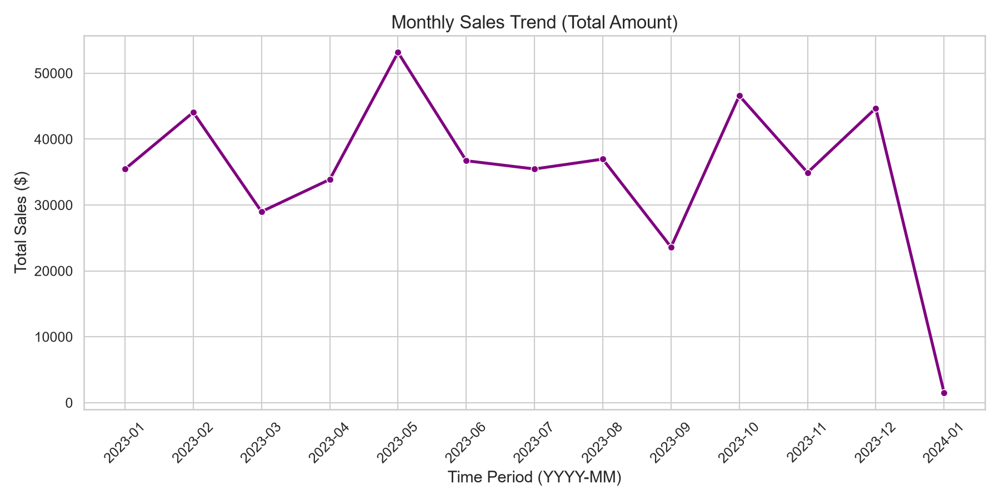
Category Breakdown
Python Pre-rendered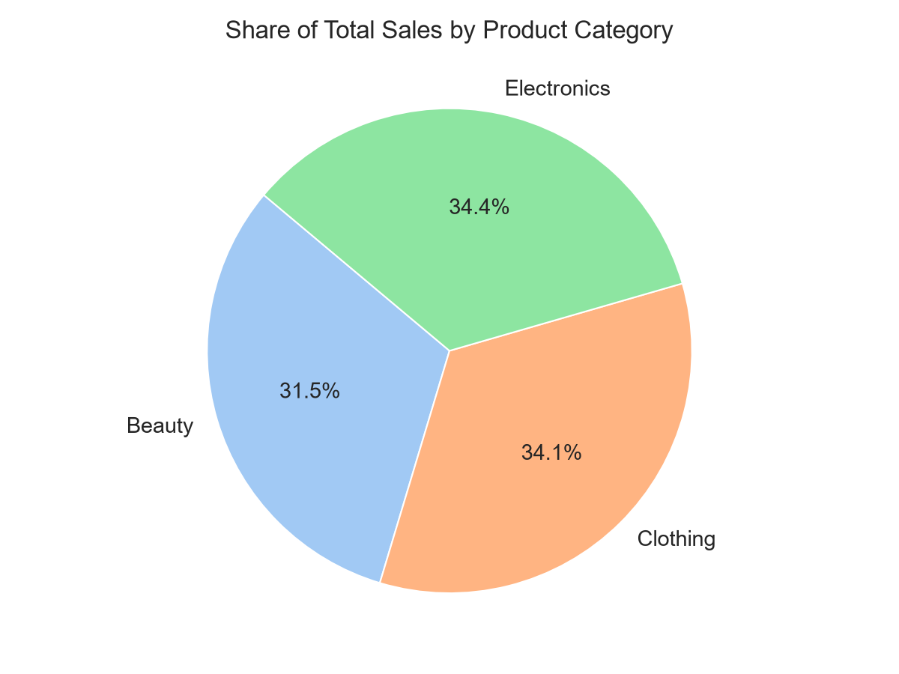
Quick Insights
Customer Demographics Snapshot
Python Pre-rendered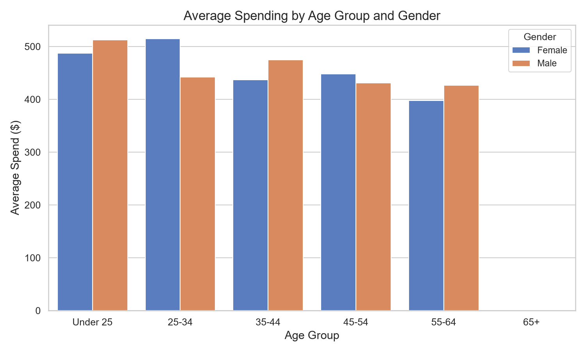
How does customer age and gender influence their purchasing behavior?
We analyzed the mean amount spent across distinct age bins (Under 25, 25-34, 35-44, 45-54, 55-64, 66+) and gender.
Analytical Insight
Purchasing behavior is remarkably balanced between Male and Female shoppers across all age groups. Average spending remains in the $200–$250 range per transaction across age brackets, indicating a steady, uniform spending behavior regardless of demographics.
Are there discernible patterns in sales across different time periods?
We plot monthly transaction volumes and day-of-week sales averages to identify shopping timing trends.
Monthly Sales Trend
Day of Week Performance
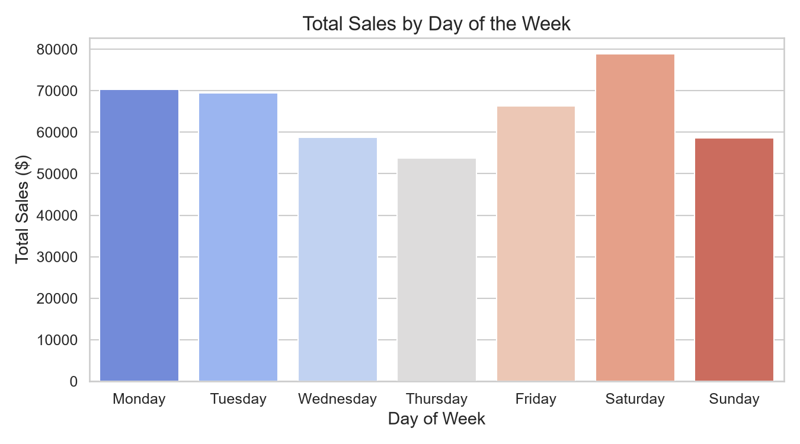
Analytical Insight
Sales do not show heavy day-of-week skew, suggesting consistent purchase schedules. Monthly aggregates show fluctuations, with peaks representing seasonal demand adjustments.
Which product categories hold the highest appeal among customers?
Comparison of revenue share, quantity sold, and transaction volumes for Electronics, Clothing, and Beauty products.
Analytical Insight
Electronics, Clothing, and Beauty capture roughly equal shares of customer interest (approx. 33% each). Electronics generates a slightly higher average price per transaction, but Clothing and Beauty keep pace in sheer transaction volumes.
What are the relationships between age, spending, and product preferences?
Exploring how age aligns with what customers buy and how much they spend. We examine correlation coefficients and categorical proportions across age groups.
Category Share by Age
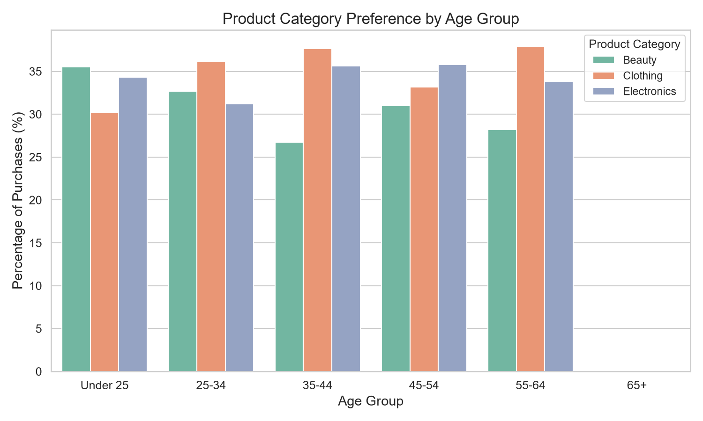
Age vs Spending Scatter
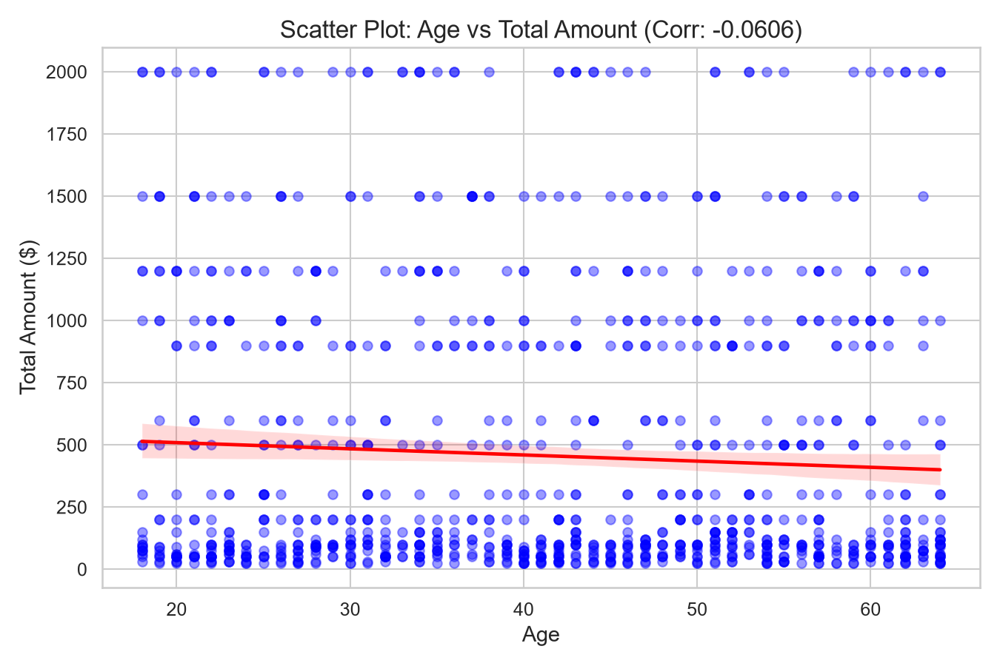
Analytical Insight
The correlation between Age and Total Amount is extremely close to zero (-0.0606), as shown by the flat regression line. Product preferences are also distributed almost equally within each age group—meaning teenagers and seniors buy Electronics, Clothing, and Beauty in near-identical ratios.
How do customers adapt their shopping habits during seasonal trends?
Analysis of sales by product category across Winter, Spring, Summer, and Autumn. Let's see if season drives demand shifts.
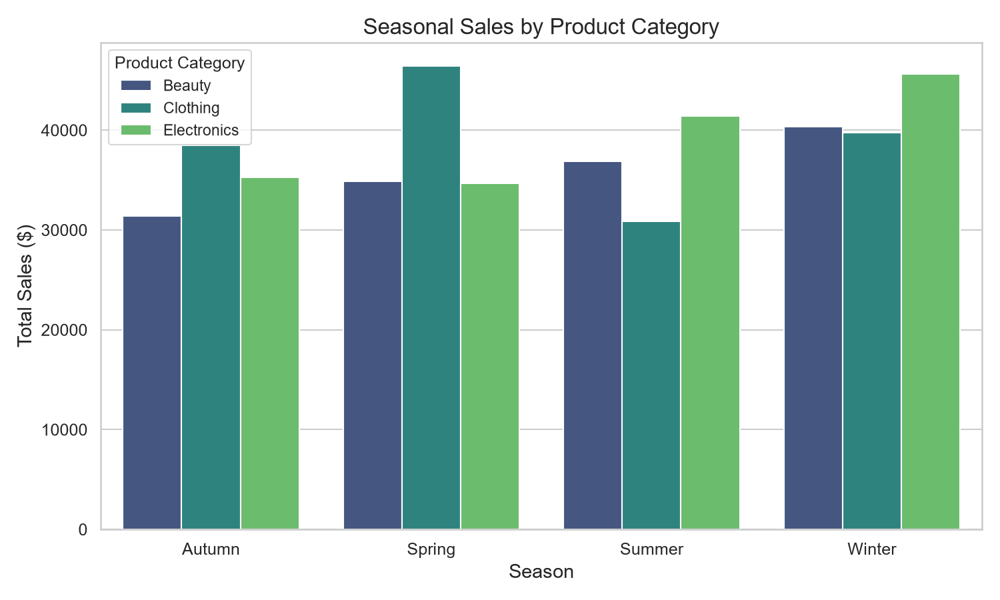
Analytical Insight
Seasonal behavior does not display the hyper-seasonality typical in localized retail (e.g., heavy winter jackets, summer swimwear), likely due to the generalized product category labels in the dataset. Nevertheless, slight volume shifts occur, providing optimization angles for promotional calendars.
Are there distinct purchasing behaviors based on the number of items bought per transaction?
Analyzing if customers who buy larger quantities behave differently in terms of price choice or spending patterns.
Avg Spending by Quantity
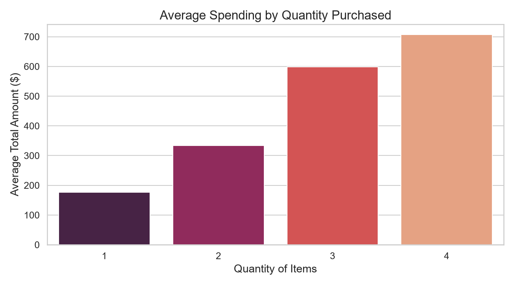
Category Share per Quantity
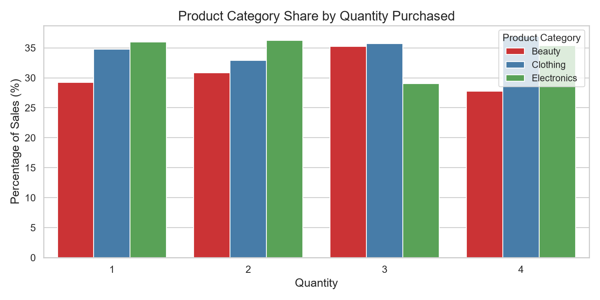
Analytical Insight
Average transaction value climbs linearly with the quantity of items purchased, which makes sense mathematically. However, the price-per-unit remains constant across different quantity groups, showing that bulk purchasing doesn't currently trigger discounts or skew towards cheaper/more expensive items.
What insights can be gleaned from the distribution of product prices within each category?
We display box plots and violin charts of price distribution to see how price points vary within Electronics, Clothing, and Beauty.
Price Statistics Table
| Category | Count | Min Price | Median (50%) | Max Price | Std Dev |
|---|
Price Distribution Box Plot
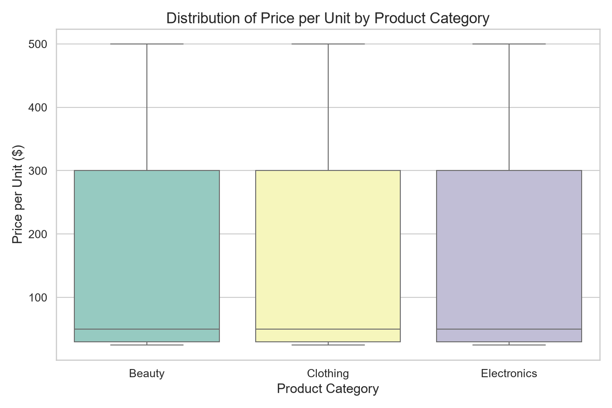
Analytical Insight
Prices range widely from $25 up to $500 across all categories. The distribution is highly uniform—there are equal numbers of cheap, mid-range, and high-end items in Electronics, Beauty, and Clothing. This flat distribution indicates products are simulated uniformly across key prices ($25, $30, $50, $100, $200, $300, $500).
Unsupervised K-Means Clustering
Groups 1,000 customers into distinct behaviors based on Age, Spending, and Quantity.
Segment Membership Checker
Input customer attributes to calculate their segment membership based on scaled Euclidean distance to centroids.
Clustering Vector Visualization
Python Exported 3D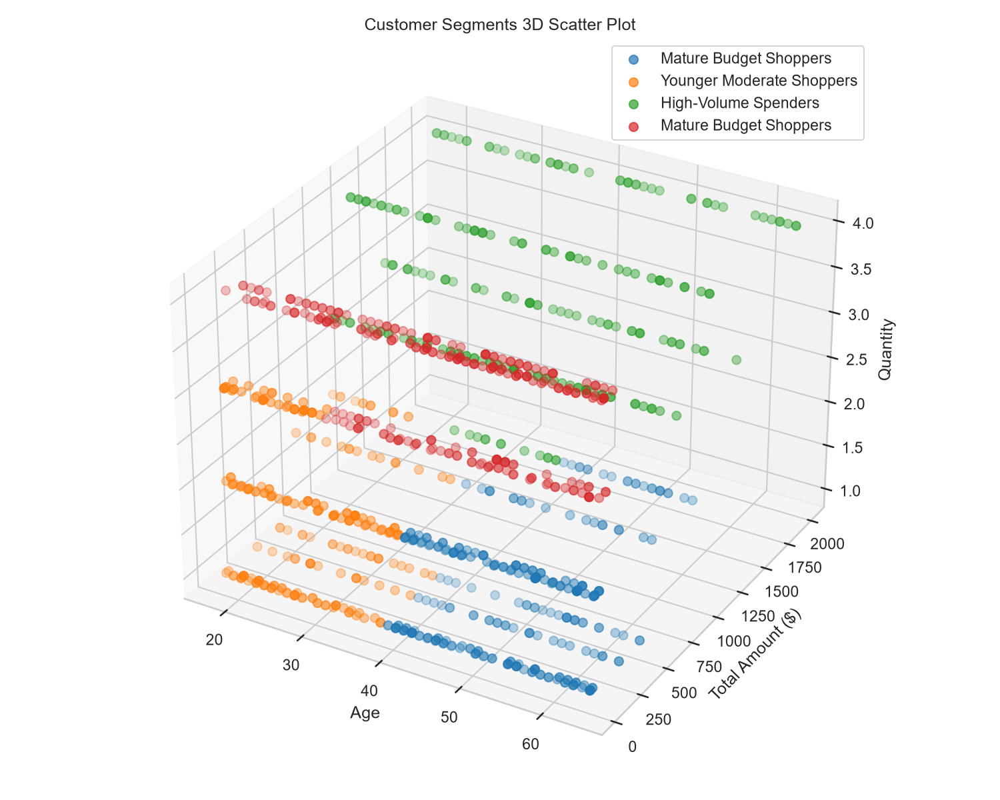
K-Means automatically grouped these patterns. The vertical axis represents quantity, the horizontal represents age, and depth represents total transaction spending.
Real-Time Regression Engine
Enter customer demographics, products, and a target date. The system will predict purchase quantity and expected spending using our trained Ridge Regression model.
Calculated Expectations
0.00
Items per sale$0.00
Total transaction ($)Model Parameter Coefficients & Performance
Ridge Regression WeightsBelow are the mathematical weights calculated during Python training. The model multiplies each feature by its weight and adds the intercept to compute predictions.